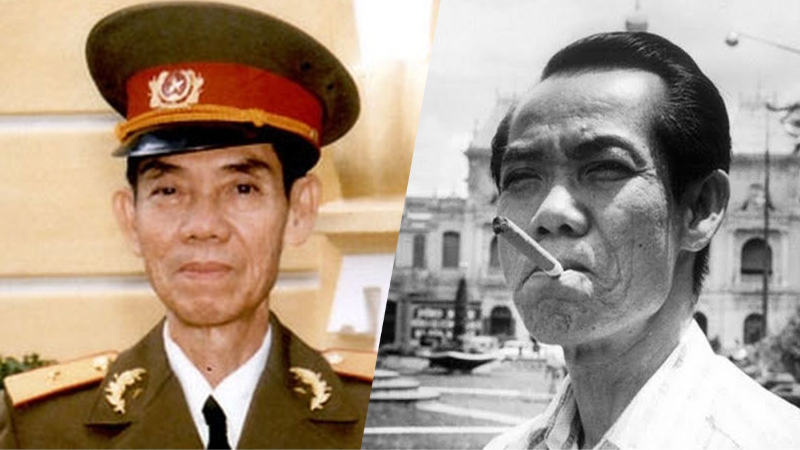

Giữa bối cảnh ấy, đã xuất hiện một người đàn ông góp phần thay đổi cục diện cuộc chiến.
Ông không hoạt động như một người lính ngoài mặt trận…
Ông ra vào các phòng họp, tòa soạn, quán cà phê và những trung tâm quyền lực của Sài Gòn…
Nhằm âm thầm thu thập những thông tin tuyệt mật…
